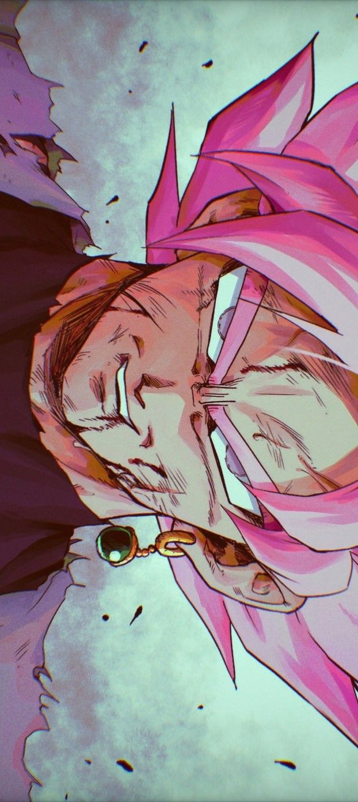

Seu recadinho:
Bom dia moça! Tava faltando você aqui :). Então, acho que a primeira coisa que tenho de fazer, é te agradecer, esses ultimos meses seriam muito mais difeceis sem você. Com certeza foi a pessoa que mais se preocupou comigo esse ano, sempre que estava mal, você tava lá pra me ajudar. Quando eu precisava desabafar sobre a Laíza, tu também tava lá para me confortar. E claro... Sem você, o meu relacionamento seria praticamente impossivel. Moça, tu é um ser humano incrivel, atenciosa, dovertida, leve de ter por perto, e que uma cabeça muito forte e que me inveja muito. Enfim apesar de morrer de ciumes da sua relação com a Laíza, eu só tenho o que agradecer a você. Espero que tenha gostado dessa lembrancinha ;)
